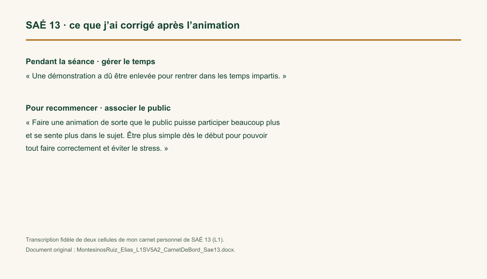

Le teaser du groupe
Support collectif publié sur UTLN.Pod par Valentin Rodriguez.
Compétence · Repères de formation
Rendre un contenu scientifique compréhensible, avec un langage et un support adaptés au public, sans perdre sa justesse.
Université de Toulon · Licence Sciences de la Vie
Ces repères décrivent les attendus de la formation. Ils ne constituent pas une validation de mes acquis. Les extraits du dossier indiquent ce qui est effectivement documenté.
 Agrandir le référentiel
Agrandir le référentielL1 → L2 · trois situations de communication
À la SAÉ13, notre groupe animait une séance sur la pollution de l’eau à partir des radis. Je voulais sensibiliser le public, mais le temps nous a obligés à enlever une démonstration. Mon carnet dit aussi ce que je changerais : faire participer davantage et simplifier dès le départ.

Agrandir l’extraitDémonstration retirée pour tenir le temps — La correction vient du déroulement réel de l’animation.
Lire les pages sélectionnéesComposante · Comprendre un sujet complexe
En L2, j’ai rédigé ma section signée sur Karenia brevis dans la revue SEGE14. J’ai aimé construire cette revue : définir le phénomène, présenter des méthodes de surveillance issues de la littérature, puis organiser les résultats pour un lectorat scientifique. Les figures illustrent ces publications ; elles ne sont pas des mesures que j’ai réalisées.
 Agrandir l’extrait
Agrandir l’extrait↗ La figure HABscope sert à expliquer une méthode publiée, pas à revendiquer sa réalisation.
Lire ma sectionComposantes · Support adapté et justesse
Dans la SAÉ43, nous avons présenté El Niño et La Niña en amphi. Mon carnet décrit des répétitions, le retrait de figures et la réduction de ma partie de dix à cinq minutes. La captation montre mon intervention jusqu’au passage du micro. Ce travail m’a aidé à prendre confiance devant un public.
 Agrandir l’extrait
Agrandir l’extrait↗ Figures retirées, durée réduite : je choisis ce qui aide vraiment à comprendre.
Lire la pageSupport collectif publié sur UTLN.Pod par Valentin Rodriguez.
Mon intervention, coupée au passage du micro à 1 min 34 s.
Voir le diaporama · Voir la bibliographie · Voir l’analyse des sources
Différencier une animation, une revue et un oral scientifique.
Choisir les figures, rédiger une revue et adapter la durée au public.
Écouter les retours, simplifier et prendre confiance à l’oral.
J’ai adoré écrire la revue sur Karenia. ENSO m’a surtout aidé à prendre confiance en moi.
L1 → L2 · trois situations de communication
À la SAÉ13, notre groupe animait une séance sur la pollution de l’eau à partir des radis. Je voulais sensibiliser le public, mais le temps nous a obligés à enlever une démonstration. Mon carnet dit aussi ce que je changerais : faire participer davantage et simplifier dès le départ.
Démonstration retirée pour tenir le temps — La correction vient du déroulement réel de l’animation.
Lire les pages sélectionnéesComposante · Comprendre un sujet complexe
En L2, j’ai rédigé ma section signée sur Karenia brevis dans la revue SEGE14. J’ai aimé construire cette revue : définir le phénomène, présenter des méthodes de surveillance issues de la littérature, puis organiser les résultats pour un lectorat scientifique. Les figures illustrent ces publications ; elles ne sont pas des mesures que j’ai réalisées.
Agrandir l’extrait↗ La figure HABscope sert à expliquer une méthode publiée, pas à revendiquer sa réalisation.
Lire ma sectionComposantes · Support adapté et justesse
Dans la SAÉ43, nous avons présenté El Niño et La Niña en amphi. Mon carnet décrit des répétitions, le retrait de figures et la réduction de ma partie de dix à cinq minutes. La captation montre mon intervention jusqu’au passage du micro. Ce travail m’a aidé à prendre confiance devant un public.
Agrandir l’extrait↗ Figures retirées, durée réduite : je choisis ce qui aide vraiment à comprendre.
Lire la pageSupport collectif publié sur UTLN.Pod par Valentin Rodriguez.
Mon intervention, coupée au passage du micro à 1 min 34 s.
Voir le diaporama · Voir la bibliographie · Voir l’analyse des sources
Différencier une animation, une revue et un oral scientifique.
Choisir les figures, rédiger une revue et adapter la durée au public.
Écouter les retours, simplifier et prendre confiance à l’oral.
J’ai adoré écrire la revue sur Karenia. ENSO m’a surtout aidé à prendre confiance en moi.